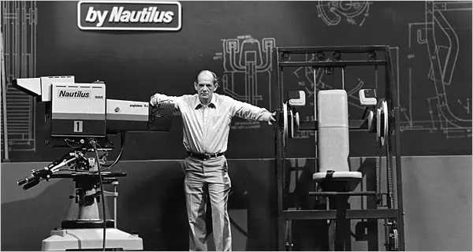
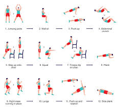
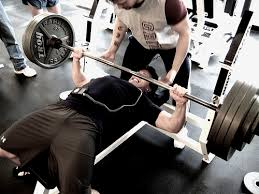
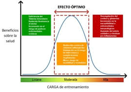
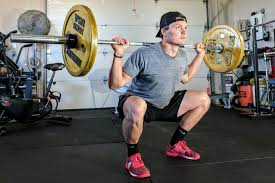

La historia del HIT: Donde todo comenzó
El Entrenamiento de Alta Intensidad (HIT) nació en la década de 1970 gracias a Arthur Jones, un innovador en la industria del fitness y fundador de Nautilus, Inc. Jones creía que el entrenamiento debía enfocarse en la calidad y no en la cantidad, promoviendo sesiones cortas pero extremadamente intensas para lograr el máximo crecimiento muscular.

Arthur Jones: El padre del HIT
Arthur Jones revolucionó el entrenamiento con su enfoque basado en la ciencia y la biomecánica. Sus principios incluían:
- Pocas series, máxima intensidad: En lugar de múltiples series, recomendaba una sola serie llevada al fallo muscular.
- Ejercicios controlados: La técnica y el tiempo bajo tensión eran clave para la efectividad del entrenamiento.
- Recuperación adecuada: Entrenar con demasiada frecuencia podía ser perjudicial, por lo que recomendaba suficiente descanso.
Base cientifica del HIT
Estudios han demostrado que entrenar con alta intensidad genera un estímulo muscular mayor en menos tiempo, activando fibras musculares tipo II y mejorando la resistencia anaeróbica.

Atletas que usaron el HIT
El HIT no solo se quedó en la teoría. Grandes culturistas aplicaron este método para alcanzar niveles de desarrollo muscular impresionantes:
- Mike Mentzer: Llevó el HIT al siguiente nivel con su variante Heavy Duty.
- Dorian Yates: Ganador de 6 títulos Mr. Olympia, perfeccionó el HIT con entrenamientos breves e intensos.
- Casey Viator: Uno de los primeros atletas en demostrar los beneficios del HIT con su transformación física.
Beneficios clave del HIT
El HIT se ha mantenido vigente porque ofrece múltiples ventajas:
- ✅ Menos tiempo, más resultados: Sesiones cortas pero efectivas.
- ✅ Maximiza la hipertrofia: Entrenar al fallo estimula el crecimiento muscular de manera óptima.
- ✅ Evita el sobreentrenamiento: Un adecuado descanso favorece la recuperación y el progreso.
- ✅ Apto para todos los niveles: Se puede adaptar a principiantes y avanzados.
Profundiza en el HIT
Explora más sobre los fundamentos del HIT, su aplicación, la ciencia detrás de él, mitos y ejemplos prácticos.

Principios del HIT
El Entrenamiento de Alta Intensidad (HIT) se basa en maximizar el estímulo muscular en el menor tiempo posible. A continuación, exploramos sus principios clave:
Fallo muscular
El HIT enfatiza realizar cada serie hasta el fallo muscular, lo que significa que no puedes completar otra repetición con buena técnica.
Según Mike Mentzer: "No hay razón para hacer más repeticiones si ya has estimulado completamente el músculo".
Pocas series, máxima intensidad
El HIT se basa en realizar menos series pero con una intensidad máxima. Esto evita el desgaste innecesario y promueve la recuperación.
Comparación: Mientras que los entrenamientos tradicionales pueden incluir 15-20 series por músculo, el HIT recomienda solo 1-2 series al fallo.
Recuperación adecuada
Uno de los pilares del HIT es la recuperación óptima. Entrenar con demasiada frecuencia puede impedir el crecimiento muscular.
Según estudios, los músculos pueden tardar de 48 a 72 horas en recuperarse completamente tras un entrenamiento intenso.
Técnica y ejecución
El HIT enfatiza la ejecución controlada y el tiempo bajo tensión para maximizar la activación muscular.
Una repetición en HIT suele durar 4-6 segundos en la fase excéntrica para evitar el uso de impulso.
Progresión y sobrecarga
Para seguir avanzando en el HIT, es fundamental aplicar sobrecarga progresiva: aumentar el peso, repeticiones o mejorar la ejecución.
Ejemplo: Si en la semana 1 haces press de banca con 80 kg x 8 reps, la semana siguiente intenta 9 reps o 82 kg.

Cómo aplicar el HIT
Para aplicar el HIT correctamente, es importante estructurar bien el entrenamiento y evitar errores comunes.
Frecuencia de entrenamiento
El HIT recomienda entrenar entre **2 y 3 veces por semana**, asegurando una recuperación completa.
Selección de ejercicios
El HIT se enfoca en ejercicios compuestos que trabajen varios grupos musculares al mismo tiempo.
Errores comunes
Algunos errores incluyen no alcanzar el fallo muscular, entrenar con demasiada frecuencia y descuidar la recuperación.
Ciencia detrás del HIT
El HIT está respaldado por múltiples estudios que demuestran su efectividad en el desarrollo muscular.
Estudios científicos
Investigaciones han demostrado que entrenar con **alta intensidad y baja frecuencia** maximiza la hipertrofia muscular.

Beneficios fisiológicos
El HIT mejora la eficiencia del sistema nervioso, activa más fibras musculares y optimiza la producción de testosterona.
Mitos y realidades del HIT
A lo largo del tiempo, han surgido muchos mitos sobre el HIT. Aquí aclaramos los más comunes.
"El HIT no sirve para hipertrofia"
El HIT ha demostrado ser altamente efectivo para el desarrollo muscular, siempre que se entrene al fallo.

"Es peligroso para principiantes"
El HIT puede ser adaptado a principiantes mediante la reducción de la intensidad y el aumento del tiempo de recuperación.
Ejemplos de entrenamiento HIT
Aquí encontrarás rutinas HIT para diferentes niveles de experiencia.
Rutina básica
Rutina HIT para principiantes: 3 días a la semana con ejercicios básicos al fallo.
Rutina avanzada
Rutina avanzada con técnicas de intensidad como repeticiones forzadas y negativas.
Del HIT a Heavy Duty
Tras la popularización del HIT por Arthur Jones, Mike Mentzer llevó esta filosofía a un nuevo nivel con su método Heavy Duty. Esta variante enfatizaba aún más la intensidad, la baja frecuencia de entrenamiento y el uso de técnicas avanzadas para alcanzar el fallo muscular total.
El Heavy Duty tuvo un gran impacto en el culturismo, influenciando a atletas como Dorian Yates, quien perfeccionó aún más este estilo de entrenamiento.